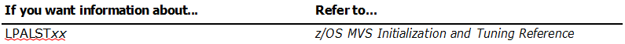
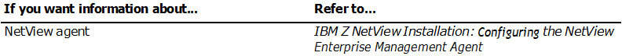

Chapter 2. Preparing the MVS System
Follow these steps to prepare your MVS system if you are installing the NetView program:
- Use SMP/E to load the NetView V6.3 libraries.
- Update the number of Language Processor (REXX) environments.
- Update SYS1.PARMLIB members.
- Modify the IEFUSI exit.
- Review the attributes assigned to extended multiple console support (EMCS) consoles.
- The base NetView program including the following components:
–Command facility
–Session monitor
–Status monitor
–Hardware monitor
–Automated Operations Network (AON)
- NetView subsystem address space, which may include the program-to-program interface (PPI)
- Event/Automation Service
- Graphic Monitor Facility host subsystem (GMFHS)
- Resource Object Data Manager (RODM)
- Z NetView Enterprise Management Agent
– The Z NetView Enterprise Management Agent is a separately orderable feature.
This book guides you through the installation and configuration of base NetView and the NetView subsystem address application.
Using SMP/E to Load the Libraries
Use the information in the NetView program directory to load the NetView libraries from the distribution media.
Modifying the Maximum Number of Language Processor (REXX) Environments for NetView
One of the most powerful features of the NetView program is the ability to run REXX code in the NetView environment. Many NetView components and base NetView functions exercise code that has been written in REXX. The NetView program also contains several parts that make use of the Data REXX function. Use the Data REXX function to include REXX instructions and functions in data files. To initialize the NetView program, you might need to adjust the maximum number of language processor environments defined by TSO that the system can initialize for the NetView address space.
Updating SYS1.PARMLIB Members
Review the following members in the SYS1.PARMLIB data set:
- “LPALSTxx” on page 10
- “PROGxx” on page 11
- “IEFSSNxx” on page 12
- “IEASYSxx” on page 14
- “IEASYMxx” on page 15
- “IKJTSOxx” on page 16
- “COUPLExx” on page 16
- “SMFPRMxx” on page 17
The xx that is used in the member names in this section corresponds with the xx specified in the IEASYSxx member of the SYS1.PARMLIB library.
LPALSTxx
The LPALST member contains the names of program libraries you want the system to concatenate to SYS1.LPALIB. This concatenation is called the LPALST concatenation, which the system uses to build the pageable link pack area (PLPA).
Add the SCNMLPA1 NetView library to the LPALST member.
Data sets to be concatenated to the SYS1.LPALIB data set must be cataloged in the system master catalog or in a user catalog identified in the LPALST member. If the SCNMLPA1 target data set is not cataloged in the system master catalog but is cataloged in a user catalog, specify (in parenthesis immediately following the data set name) the 1- to 6-character VOLSER of the pack on which the SCNMLPA1 data set resides, for example:
In this case, the system verifies that the NETVIEW.V6R3M0.SCNMLPA1 data set has a user catalog entry pointing to the NVPTFM volume.

PROGxx
The PROGxx member contains the names of program libraries that you want the system to concatenate to the SYS1.LINKLIB data set and define as authorized with the Authorized Program Facility (APF). The PROGxx member can also add exit routines that are used by the NetView program to the MVS dynamic exits facility.
Usage note: Use PROGxx instead of using both LNKLSTxx (to concatenate program libraries to SYS1.LINKLIB) and IEAAPFxx (to authorize program libraries to APF).
LNKLST concatenation
If you are using LNKLST instead of a STEPLIB DD statement in any of your NetView JCL members (for example, your startup procedure), update your PROGxx member in the SYS1.PARMLIB data set to include the following program libraries as extensions to the SYS1.LINKLIB data set:
- NETVIEW.V6R3M0.SCNMMJPN (if the Japanese NetView program is being installed)
- NETVIEW.V6R3M0.SAQNLINK
- NETVIEW.V6R3M0.CNMLINK
- NETVIEW.V6R3M0.SCNMLNKN
Usage notes:
- 1. If you installed the IBM Z NetView for Continuous Availability product, make sure that the modules in SAQNLINK library are loaded prior to those in the CNMLINK library.
- 2. The SCNMLNKN data set is used for RODM trace, MVS command exit, and DSIPHONE (which is used by CMDSERV and by the UNIX, TSO command, and REST servers). The SCNMLNKN data set is not referenced in the NetView program samples; JCL for those samples must specify the SCNMLNKN data set on the STEPLIB DD statement if it is not included in the PROGxx member.
APF authorization
The following libraries must be authorized with the APF facility. To be authorized, a library name and volume ID must be in the list of authorized libraries in the PROGxx member of SYS1.PARMLIB.
- If these are not already authorized, authorize all the libraries from the //STEPLIB, //VTAMLIB, and //NCPLOAD concatenations in your VTAM start procedure. The VTAM start procedure, CNMSJ008 (CNMNET), in NETVIEW.V6R3M0.CNMSAMP is the default member shipped with the NetView program.
- Authorize all the libraries from the //STEPLIB concatenation in the following procedures:
- NetView start procedure, CNMSJ009 (CNMPROC)
- NetView procedure to start the subsystem interface (SSI) address space, CNMSJ010 (CNMPSSI)
- RODM start procedure, EKGXRODM
- GMFHS start procedure, CNMSJH10 (CNMGMFHS)
- Event/Automation Service (E/AS) start procedure, IHSAEVNT
These procedures are located in the NETVIEW.V6R3M0.CNMSAMP samples library.
- Authorize the following NetView libraries:
- NETVIEW.V6R3M0.SAQNLINK
- NETVIEW.V6R3M0.SCNMLNK1
- NETVIEW.V6R3M0.SCNMLPA1
- NETVIEW.V6R3M0.CNMLINK
- NETVIEW.V6R3M0.SCNMLNKN
- If you are installing the NetView Japanese program, authorize the SCNMMJPN data set. This data set is listed in the //STEPLIB concatenation of CNMPROC.
- Add the SEAGLPA data set (REXX/370 library) or the SEAGALT data set (REXX alternate library) to the list of APF-authorized libraries. For information about which data set to use, see the comments in the NetView start procedure, CNMPROC.
- If you plan to use the NetView agent, authorize the following additional libraries:
- RKANMOD
- RKANMODL
- RKANMODU
- Any runtime libraries that are concatenated in the STEPLIB DDNAME and in the RKANMODL DDNAME of the IBMNA and IBMDS started tasks
- If you plan to use the Web Services Gateway function, add the SIXMLOD1 runtime library (XML toolkit) to the list of APF-authorized libraries.
Usage note: If you specify an unauthorized library on a STEPLIB or concatenate unauthorized libraries with authorized libraries, all libraries are treated as if they are unauthorized.
Exit routines
Update the PROGxx member if you use the following exit routines:
- The MVS IEFACTRT SMF installation exit receives control from the system when a job or job step ends, either normally or abnormally. The NetView program provides an IEFACTRT sample exit (CNMSMF3E) that passes data across the PPI to a receiver which issues a message that can be automated using the NetView automation facilities. If you plan to use the CNMSMF3E sample as an IEFACTRT exit routine, associate the CNMSMF3E sample to the IEFACTRT exit by adding the following statement to your PROGxx member:
EXIT ADD EXITNAME(SYS.IEFACTRT) MODNAME(CNMSMF3E)
More than one exit routine can be defined for the IEFACTRT exit, so there might be more than one EXIT statement for the SYS.IEFACTRT exit in your PROGxx member.
- You can use the Canzlog log to view the system log messages that were issued before the NetView subsystem was initialized. To enable these preinitialization messages to be written to the Canzlog log, add this statement to the PROGxx member
EXIT ADD EXITNAME(CNZ_MSGTOSYSLOG) MODNAME(DSI4LCUI)
The preinitialization messages are logged with an ASTYPE value of E.
Note: CNZ_MSGTOSYSLOG exit routines receive control only when SYSLOG is enabled as a hardcopy device. If SYSLOG is not enabled as a hardcopy device, such as if only OPERLOG is used, no preinitialization messages are written to the Canzlog log.
IEFSSNxx
The IEFSSNxx member in the SYS1.PARMLIB data set contains parameters that define the secondary subsystems during MVS system initialization. Each SUBSYS statement in the IEFSSNxx member contains parameters that define a single subsystem.
Add the names in Table 1 on page 13 to the IEFSSNxx member in the SYS1.PARMLIB data set.
| Table 1. Subsystem Names |
| Subsystem Name |
Used by: |
Procedures Name |
| CNMP |
NetView subsystem (SSI) |
CNMPSSI |
| EKGX |
RODM subsystem |
EKGXRODM |
Usage notes:
- The name of the subsystem for the NetView program is 4 characters and must be the first 4 characters of the procedure names that you use to start the following address spaces:
- NetView subsystem (sample CNMSJ010)
- NetView application (sample CNMSJ009)
For example, if both procedure names begin with CNMP, you can code the following entry in the IEFSSNxx member:
SUBSYS SUBNAME(CNMP) INITRTN(DSI4LSIT)
Create one entry for each instance of the NetView program that you plan to start on this system. Make sure that you specify the INITRTN value (DSI4LSIT) for each entry.
- Any subsystem name that you define for the NetView program can be used only for the NetView program. If you choose a subsystem name that was previously used, restart MVS before using the subsystem name. If the NetView program is started as a job rather than as a task, the job name must have the same first four characters as the subsystem interface and startup procedure.
- Consider the following conditions before deciding where to place the NetView subsystem name in the IEFSSNxx member:
- If you place the NetView subsystem name after other subsystem names in the IEFSSNxx member, all MVS messages and commands received by the NetView subsystem are affected by the changes made by the other subsystems that are listed before the NetView subsystem.
- If you are defining more than one NetView subsystem (SSI) in the IEFSSNxx member, the first NetView subsystem must come before the BEGINPARALLEL keyword. Any remaining NetView subsystems can be defined following the BEGINPARALLEL keyword. If you are defining only one NetView subsystem, the NetView subsystem can be placed before or after the BEGINPARALLEL keyword in the IEFSSNxx member.
- By default, the NetView program does not send unsolicited foreign messages (those originating at another MVS LPAR in the same sysplex that are not specifically destined for an EMCS console owned by a NetView operator) to Canzlog. To have foreign messages eligible to be logged in Canzlog, specify the following parameter on the first SUBSYS statement that contains INITRTN(DSI4LSIT):
INITPARM('LOGFORN')
Note that the NetView subsystem initialization routine ignores any value specified on INITPARM on a SUBSYS statement containing INITRTN(DSI4LSIT) that is not the first such statement read by MVS.
- The DSI4LSIT initialization routine allocates the CNMCANZ0 data space where MVS and NetView messages are stored. The data space wraps when it reaches its current usable size. CNMCANZ0 is the main Canzlog data space, and by default is allocated with a static data space size of 2 GB. If the data space is specified as dynamic, it will allocate 128 MB of storage and grow by 8 MB as necessary accommodate message processing until it reaches its maximum size.
To explicitly define the data space size to be a maximum of 2GB, specify the following value on the INITPARM parameter on the first SUBSYS statement that contains INITRTN(DSI4LSIT)
INITPARM('FULLDS')
To restrict the data space size to a maximum of 512 MB, specify the following value on the INITPARM parameter on the first SUBSYS statement that contains INITRTN(DSI4LSIT):
INITPARM('TINYDS')
To explicitly define the data space size to be static, which means the entire data space storage will be used before wrapping occurs, specify the following value on the INITPARM parameter on the first SUBSYS statement that contains INITRTN(DSI4LSIT):
INITPARM('STATIC')
To explicitly define the data space size to be dynamic, which means only 128 MB of data space storage will be used before wrapping occurs, unless more space is needed to accommodate situations where logging of messages is much faster than automation of messages, specify the following value on the INITPARM parameter on the first SUBSYS statement that contains INITRTN(DSI4LSIT):
INITPARM('DYNAMIC')
Note that when DYNAMIC is used and Canzlog data is not being archived, the amount of messages that can be browsed is less than when the Canzlog data space is defined as STATIC.
The NetView subsystem initialization routine ignores any value specified on the INITPARM parameter on a SUBSYS statement that contains INITRTN(DSI4LSIT) that is not the first such statement read by MVS.
Multiple values can be specified on the INITPARM parameter. For example, if the TINYDS, DYNAMIC, and LOGFORN values are required, specify these values on the same INITPARM parameter:
INITPARM('TINYDS,DYNAMIC,LOGFORN')
Separate the values with a comma.
- If you do not add the NetView subsystem to the subsystem name table, you can dynamically add it before starting the NetView subsystem. For information on dynamically adding the subsystem name to the table, see “Starting the NetView Program Without Restarting the MVS System” on page 67.
IEASYSxx
The IEASYSxx member in the SYS1.PARMLIB data set contains system parameters.
If you are using the status monitor, system automation, or Automatic Restart Manager (ARM) support, update the MAXUSER and RSVNONR values using the following steps:
- For the status monitor, determine the number of times you expect to stop and restart the NetView program over the life of the MVS IPL.
- For system automation, determine the number of times you expect to stop and restart the NetView subsystem interface (SSI) address space over the life of the MVS IPL.
- If both the preceding sets of conditions apply, add the values together that you computed.
Increase the number of address spaces available to MVS by this value by changing the MAXUSER or RSVNONR value, or both:
- Set MAXUSER to the number of ASIDs you want available at any one time.
- Set RSVNONR to the replacement values.
Usage notes:
- The MVS program does not reuse any address space identifiers (ASIDs) that have established a program call interface. The NetView subsystem interface address space does reuse ASIDs that have established a program call interface. The RSVNONR value provides a way to specify replacement ASIDs for the ones lost.
- The total of the values of MAXUSER, RSVNONR, and RSVSTRT, cannot exceed 32767. If you want a low MAXUSER value, be sure to provide a reasonably large value for RSVNONR.
IEASYMxx
Add a SYSDEF statement in member IEASYMxx to identify user-defined system symbolic variables for the NetView program, including the TCP/IP application name, RODM name, and network ID.
Setting these symbolic variables can alleviate modification of many of the NetView initialization members unless some default parameter such as a TCP/IP port needs to be changed.
For example, you can define the following symbolic variables (these are the default names used in the NetView program):
SYSDEF SYMDEF(&CNMTCPN='tcpip_name')
SYSDEF SYMDEF(&CNMRODM='rodm_name')
SYSDEF SYMDEF(&CNMNETID='network_id')
Usage note:
If you need to produce an actual ampersand (&) in the text of members that support symbolic substitution, one easy method is to define the ampersand as follows in your system substitution tables.
SYSDEF SYMDEF(&.='&')
You can use the symbol &. to specify an ampersand in this statement anywhere without risking an inadvertant symbol substitution.
The initialization members that use the symbolic variables are shown in this table.
| Table 2. Symbolic Variable Usage by Initialization Members |
| Member |
Task |
TCP/IP NAME
&CNMTCPN |
RODM NAME
&CNMRODM |
NETID
&CNMNETID |
| CNMSTYLE |
NetView initialization |
X |
X |
X |
| DUIGINIT |
GMFHS (Graphics) |
|
X |
|
| FLBSYSD |
SNA topology manager |
|
X |
|
Note: After you run job CNMSJBUP (see “Creating the Installation JCL Samples Library Using Job CNMSJBUP” on page 21), you can use sample CNMSJM12 in data set NETVIEW.V6R3USER.INSTALL as an alternate method to do symbol substitution. CNMSJM12 replaces symbolic variables in NetView members.
If you do not define these symbolic variables in the IEASYMxx member, you can specify their values in the CNMSTYLE member. Additionally, you can use the CNMSJM12 sample to replace other symbolic variables that are used in your data set members.
Additional considerations:
- 1.You can use the &CNMDOMN variable to define the NetView domain to applications outside of the main NetView address space. If you use the A01APPLS (CNMS0013) sample, you can use the &CNMDOMN variable to provide the NetView domain to VTAM. If you do not set this variable, replace all occurrences of the &CNMDOMN variable in the A01APPLS sample with the NetView domain. Within the NetView address space, use the &DOMAIN local symbolic variable to specify the NetView domain.
- 2.RODM looks for an optional EKGCUST DD statement in the jobstream. The EKGCUST statement names the input customization member. If you defined a customization member, RODM reads it. If not, RODM provides defaults. You can use symbols to represent operands, values, and comments on the EKGCUST statement, if symbolic substitution is enabled on your system. Ensure that these symbols are defined in the IEASYMxx member.
- 3.The SNA topology manager is shipped with an initialization file (FLBSYSD). In addition, the FLBOSIDS, FLBSRT, and FLBEXV files can be used to further customize SNA topology manager views. If symbolic substitution is enabled on your system, you can use symbols in these initialization and customization files. Ensure that the symbols are defined in the IEASYMxx member.
IKJTSOxx
The IKJTSOxx member contains TSO/E settings, including command and program authorization information.
If you plan to use the NetView agent, add the KPDDSCO command in the authorized program (AUTHPGM) section:
AUTHPGM NAMES(KPDDSCO,pgm2,...)
IBM Tivoli Monitoring components require the KPDDSCO command to be authorized in the IKJTSOxx member for persistent data store processing.

COUPLExx
The COUPLExx member contains cross-system coupling facility (XCF) parameters.
Add the following DATA statement to identify the automatic restart manager (ARM) couple data to XCF:
DATA TYPE(ARM) PCOUPLE(primary-dsname) ACOUPLE(alternate-dsname)
Initialize the primary and alternate ARM couple data sets after you create them.
If you are adding this system to a sysplex to enable the NetView program to use XCF Services, see z/OS MVS Setting Up a Sysplex .
SMFPRMxx
To write the following records to the System Management Facility (SMF) log, ensure that member SMFPRMxx in the SYS1.PARMLIB data set is set up to collect type 37, type38, and type 39 SMF records accordingly:
- SMF record type 37: hardware monitor records
- SMF record type 38: authorization, task resource utilization, and command resource utilization records
- SMF record type 38: session monitor records
The SMF 38 subtype 4 record is written on an interval. Set the SMF interval value, and if desired, the SMF synchronization value.
If you plan to use the CNMSMF3E sample as an IEFACTRT exit routine, verify that type 30 SMF records are set up to be collected and that the EXITS operand of the SYS specification includes the IEFACTRT exit.
For example, the following statement causes SMF record types 0 through 255 to be collected and the IEFACTRT exit to be called:
SYS(TYPE(0:255),EXITS(IEFU83,IEFU84,IEFU85,IEFACTRT,IEFUJV,IEFUSI, IEFUJP,IEFUSO,IEFUJI,IEFUTL,IEFU29,IEFUAV),NOINTERVAL,NODETAIL)
Modifying the IEFUSI exit
You can use the IEFUSI exit to limit the region size and region limit, and to limit the size of data spaces and hiperspaces for jobs started on an MVS system. If you have the IEFUSI exit on your system, modify it as needed to accommodate the region sizes for the various address spaces of the NetView program. See Table 3 on page 17 for a list of the data spaces that are created by NetView address spaces.
| Table 3. Data spaces created by the NetView program |
| Address Space |
Data Spaces Created |
| CONNSEC |
TCP/IP connection security (CONNSEC) creates a data space for each TCP/IP stack on your system. |
| Master Scheduler |
Subsystem initialization for the NetView program creates a data space to contain Canzlog data. This data space is, by default, defined with 2GB of virtual storage, which can significantly impact real and auxiliary storage requirements. For more information about defining this data space, see the subsection named "IEFSSNxx" in the section named "Updating SYS1.PARMLIB Members" in this chapter.
Warning: Proper planning for real and auxiliary storage must be performed before enabling the Canzlog data space, as system slowdown and hangs can occur with insufficient storage. |
| NetView |
- The NetView program creates an internal trace data space at initialization that is managed through the TRSIZE parameter in the CNMPROC startup procedure.
- The Canzlog archiving function creates data spaces CNMCANZ1, CNMCANZ2, …, CNMCANZ9, CNMCANZA that are used for browsing archived Canzlog data. The number of data spaces that are created is limited by the specification on the ARCHIVE.BROWSE.DATASPACES or ARCHIVE.BROWSE.MAXDSPSIZE statement in the CNMSTYLE member. The data space(s) will be created as necessary to accommodate usage requirements, and their sizes can increase up to the defined limit.
- TCP/IP connection management (TCPCONN) creates a data space for each TCP/IP stack on your system.
- The IP packet trace (PKTS) function creates a data space for each TCP/IP stack on your system.
- The OSA packet trace (OPKT) function creates a data space for each TCP/IP stack on your system.
- If the DISCOVERY tower is enabled in the CNMSTYLE member, the real-time SMF data network management interface (SYSTCPSM) creates a data space for each TCP/IP stack on your system.
- As of V6R3, if LOGSMF is enabled in the Command Statistics function, a data space is created to store Command Statistics data before being written into SMF. The size of the data space is specified by the CMDMON.INIT.SMFDSSIZE CNMSTYLE statement.
|
| RODM |
RODM creates and utilizes three data spaces. Note that RODM allocates a 2 gigabyte data space at initialization. |
| NetView agent |
- The NetView agent creates a data space for each NetView program with which it communicates.
- A second data space is created if the value of the NACMD.PERSIST statement in the CNMSTYLE member is greater than zero.
|
The IEFUSI exit is passed the address of the program name on input.
Using EMCS Consoles within the NetView Program
The NetView program uses extended multiple console support (EMCS) consoles for tasks that issue MVS system operator commands.
EMCS consoles are dynamically defined. Any console names that you specify in the CONSOLxx member are not available for use as EMCS console names. Therefore, if you specify any console names in CONSOLxx, make sure that they are different from console names that you plan to use within the NetView program. For information on how to construct console names for use within the NetView program, see “Assigning Unique EMCS Console Names” on page 55.
EMCS consoles can be assigned attributes. For more information about these attributes, see the IBM Z NetView Security Reference.
Planning to Restart the Target System
If your business policy and schedule allow it, restart the MVS system now to activate the changes. When restarting the MVS system, use the CLPA option, which enables the NetView program to access the new LPALIB members from NETVIEW.V6R3M0.SCNMLPA1.
If you cannot restart the MVS system at this time, you can manually activate the changes that are required to start the NetView program. For more information on manually activating the changes, see “Starting the NetView Program Without Restarting the MVS System” on page 67. Plan to restart the MVS system at a later time to activate all the changes that you made to the MVS system.
Important: If you are implementing a user-defined RACF® resource class and a user-defined RACF router table for RODM, you must restart MVS.